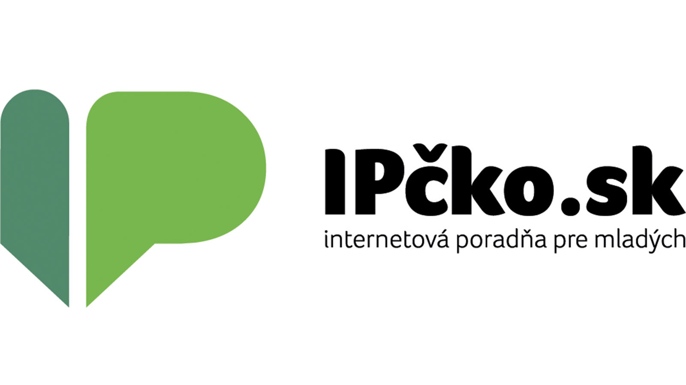

Pomoc pri kyberšikane môžeš hľadať u rodičov alebo inej dôveryhodnej dospelej osoby, ktorá ti vie poradiť a podporiť ťa.
Dôležité je tiež obrátiť sa na učiteľa alebo školského psychológa, ktorí vedia situáciu riešiť v škole.
Ak potrebuješ odbornú pomoc, môžeš kontaktovať krízovú linku na stránke ipčko.sk.
